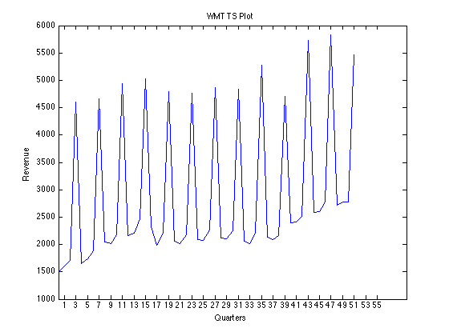

Time Series Activity
Contents
Information
Prepared by: Philip Dunay on March 12, 2015 for Emdad (QTM3610)
Import the data
[~, ~, raw] = xlsread('/Users/philipdunay/Google Drive/Spring 2015/QTM3610 Files/Class Data/Excel Data Files/Toys R Us.xls','DATA'); raw = raw(2:end,2:end); format longg % Create output variable data = reshape([raw{:}],size(raw)); %Y(i) = b0 * b1^(X(i)) * b2^q1 * b3^q2 * b4^q3 * E(i) % log(yi) = logb0 + Xilogb1 + q1logb2 + q2logb3 + q3logb4 % Allocate imported array to column variable names CodedQ = data(:,1); Revenue = data(:,2); Q1 = data(:,3); Q2 = data(:,4); Q3 = data(:,5); years = [1996:2008]; y = repmat(years,1,4)'; y = sort(y); quarters = [1:4]; q = repmat(quarters,1,13)'; logrev = log(Revenue); %tbl = table(CodedQ,Q1,Q2,Q3,logrev,'VariableNames',{'codedQ','q1','q2','q3','logrev'}); %lm = fitlm(tbl); lb0 = 3.621; lb1 = .002968; lb2 = -.3669; lb3 = -.3715; lb4 = -.3445; b0 = 10^lb0 b1 = 10^lb1 b2 = 10^lb2 b3 = 10^lb3 b4 = 10^lb4
b0 =
4178.30366646622
b1 =
1.00685747811791
b2 =
0.42963534256987
b3 =
0.425108706804616
b4 =
0.4523764623325
Plot the Time Series
ts = timeseries(Revenue); plot(ts) set(gca, 'XTick', 1:2:55) title('WMT TS Plot') ylabel('Revenue') xlabel('Quarters') % There definitely appears to be seasonality in the data, it looks like the % company sees a spike in sales around the holiday season in Q4
Analysis of fitted result
% Quarterly, the compound growth result is .68%
Forecast for Q2 2009
y = b0* b1^53 * b2^0 * b3^1 * b4^0
y =
2551.54951144092